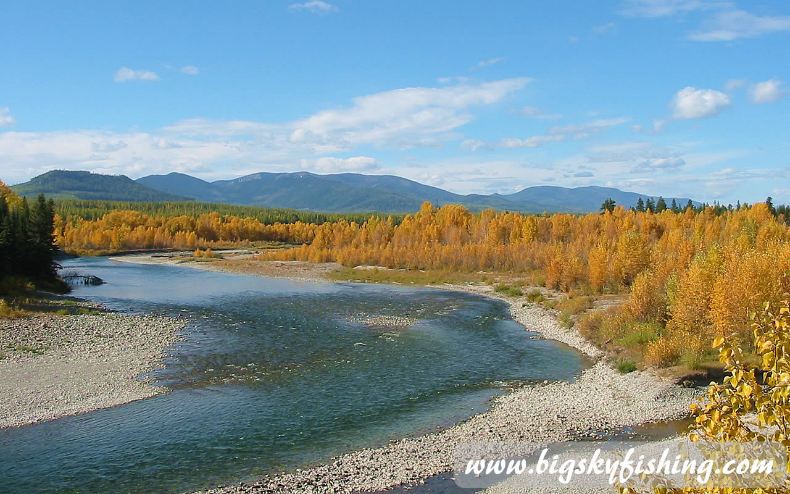
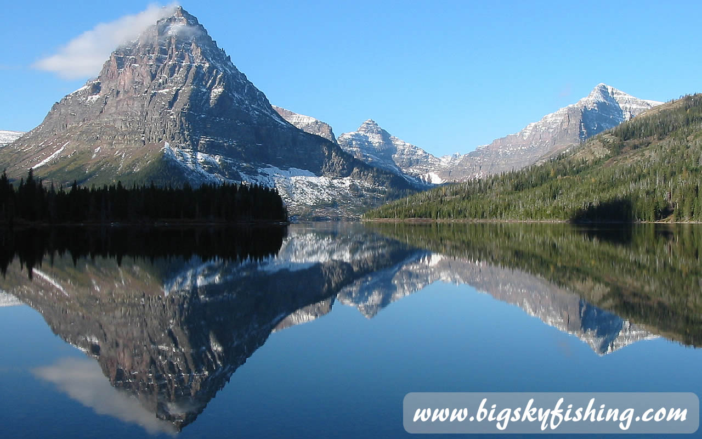
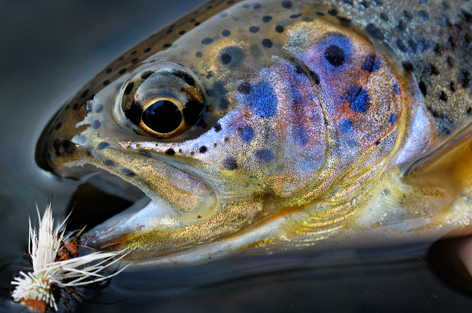

Fish the Rivers of Alaska

Fishing the Rivers of Alaska - Detailed fishing and floating information, as well as photographs, for more than 40 rivers in Alaska.
Fish the Lakes of Alaska

Fishing the lakes of Alaska - Information and photos for fishing more than 50 lakes in Alaska.
Scenic Drives of Alaska

Alaska Scenic Drives - Explore Alaska the way it is meant to be explored, off the main highways. Detailed information, photos and maps about forty-four scenic drives.

Come to Alaska for world class fly fishing
Alaska fly fishing is legendary. Anglers from all over the world travel to Alaska to experience fly fishing the blue ribbon trout rivers and pristine mountain lakes. Whether an angler seeks to battle trophy sized wild rainbow trout on the Yellowstone River or to experience the solitude of a high mountain lake, Montana provides fly fishing experiences like no other place can.
Alaska provides such an abundance of opportunities that visiting anglers frequently have difficulty in deciding where to start their fly fishing adventure. This website will help you begin planning any fly fishing trip to Alaska. An angler can research all major rivers and many lesser-known ones, obtaining helpful fly fishing and floating information about each. An extensive photo gallery of each river and lake is provided, allowing the visiting angler to better understand and visualize a particular river or lake before planning their trip. Each river is also broken down to provide individuals who will be float fishing or rafting a river with helpful information, such as access points, locations of dams and river miles.
Fly Fish Alaska provides a wealth of information about Montana not found elsewhere online. In the Explore Alaska section of the site, thousands of photos showcase all areas of Montana. In-depth information is provided on a multitude of topics, ranging from scenic drives, the wonder skiing to its quirky towns and cities. Fishing and hiking information for several National Parks is also included on the site.